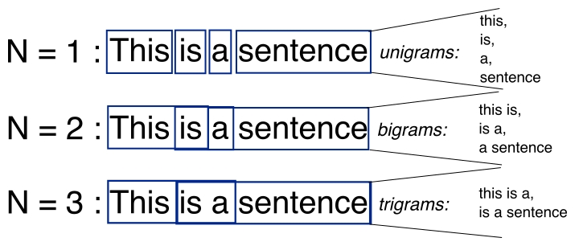

Modifying the Typical N-gram Feature
Brocardo and team design a supervised learning technique and n-gram analysis approach to predict the probability that documents from the Enron email dataset are written by the same author.
N-grams are a list of characters that have a size of n and are beneficial for stylometry because they obscure the topic of a document (when n is at least 2 and shorter than the length of a word). The team’s n-gram analysis uses n-grams to generate a user profile.

Image Source: https://www.oreilly.com/library/view/fasttext-quick-start/9781789130997/assets/4b93186c-0e7e-4b99-81e3-86d6d9646dd5.jpg
A set of documents written by the same user is divided into 2 groups. The first group is used to create a unique set of n-grams, N, and the second group is split into blocks. The n-grams in each block of the second group are compared to the set of n-grams collected in d1to calculate the ratio of n-grams that overlap N to the size of N. The sample mean and variance of this distribution are used to calculate each user threshold.
A block of a document is considered authored by a user only when the ratio of n-grams that overlap N to the size of Nis greater than the sum of a user threshold and a constant.
The team evaluated the performance of this analysis using the Enron email dataset. The dataset contains 150 authors with an average email length of 200 words. The emails cover a breadth of topics - business communications, technical reports, and personal chats - and vary in grammatical formality making it challenging to attribute a unique style to individual authors.
It is noted that the optimal performance occurred when using an n-gram size of 5. This may be because the model is also detecting other aspects of the documents, like the topic of the email and author’s word choice.
Like the author’s mentioned in the paper, it would be interesting to expand this approach to other features like part of speech and spelling errors.
References:
Marcelo Luiz Brocardo, Issa Traore, Sherif Saad, Issac Woungang,”Authorship
Verification for Short Messages Using Stylometry”, Proc. of the IEEE Intl. Conference on Computer, Information and Telecommunication
System (CITS 2013), Piraeus-Athens, Greece, May 7-8, 2013 (Best Paper Award).